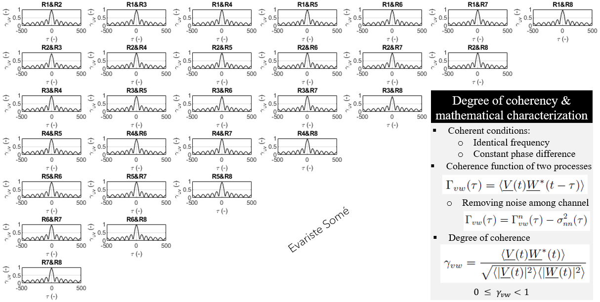
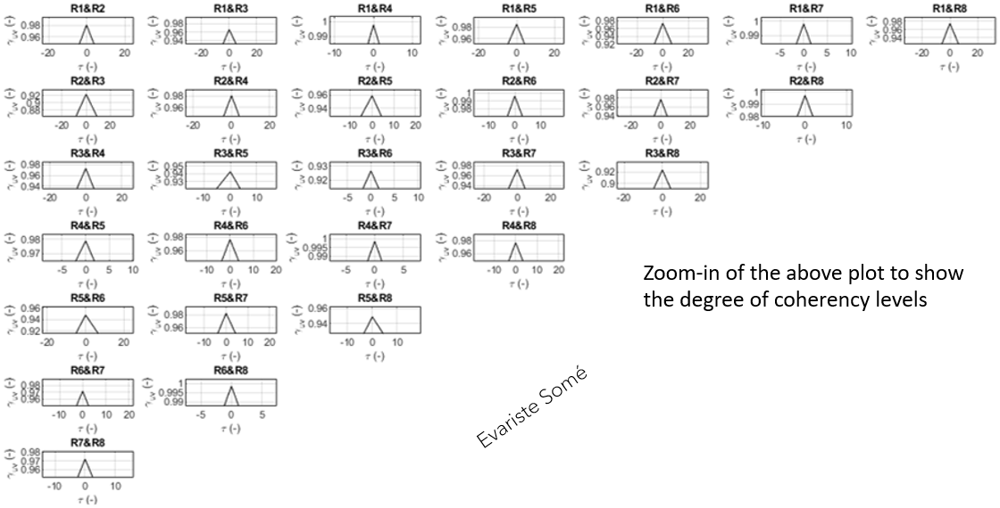

Coherent RF Waves using 8 SDRs RTL-SDR
...Page update in progress ...
Sample results of my research:
- Coherent RF waves obtained with 8 SDR receivers (RTL-SDR radios) using injection-locked techniques (more to come soon).
|
|
|---|

|
|  |
|  |

|